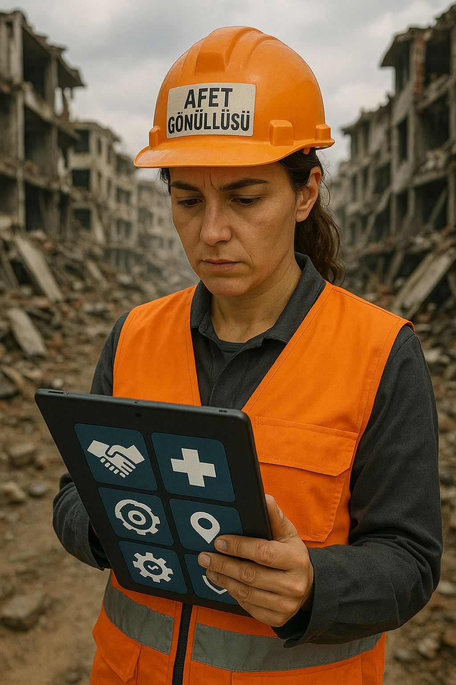

Hakkımızda
AYBİS (Afet Yönetim Bilgi Sistemi), afet öncesi, sırası ve sonrasında etkin veri yönetimi sağlayan ulusal bir dijital platformdur. Sistemimiz, afet yönetim süreçlerinin tüm aşamalarında karar vericilere ve vatandaşlara kritik bilgiler sunar.
2023 yılında kurulan sistemimiz, Türkiye'nin afetlere hazırlık ve müdahale kapasitesini artırmak için geliştirilmiştir. Gerçek zamanlı veri toplama, analiz ve raporlama özellikleriyle afet yönetiminde yeni bir standart oluşturuyoruz.
50+
İş Ortağı
24/7
Kesintisiz Hizmet
1M+
Kullanıcı

Hizmetlerimiz
Erken Uyarı Sistemi
Deprem, sel, yangın gibi afetler için gelişmiş erken uyarı sistemleri ile önceden bilgilendirme.
Gerçek Zamanlı Haritalama
Afet bölgelerinin ve toplanma alanlarının gerçek zamanlı olarak haritalanması ve takibi.
Ekip Koordinasyonu
Afet müdahale ekiplerinin koordinasyonu ve kaynak yönetimi için özel araçlar.
Analiz ve Raporlama
Afet verilerinin analizi ve detaylı raporların oluşturulması için gelişmiş araçlar.
Afet Haritası
Gerçek zamanlı afet durumlarını, toplanma alanlarını ve müdahale noktalarını harita üzerinden takip edin.
Son Depremler
| Tarih | Lokasyon | Büyüklük | Derinlik |
|---|
Toplanma Alanları / Güvenli Bölgeler
| Alan Adı | İl / İlçe | Kapasite | Koordinatlar | Durum |
|---|---|---|---|---|
| Merkez Park Alanı | İstanbul / Kadıköy | 1500 | 40.9831, 29.0714 | Kullanımda |
| Yenimahalle Lisesi Bahçesi | Ankara / Yenimahalle | 800 | 39.9521, 32.8334 | Bakımda |
| Sahil Spor Kompleksi | İzmir / Karşıyaka | 1200 | 38.4746, 27.1161 | Kullanımda |
| Belediye Otoparkı | Bursa / Osmangazi | 600 | 40.1826, 29.0662 | Ulaşılamıyor |
| Atatürk Stadyumu Açık Alanı | Adana / Seyhan | 2000 | 37.0000, 35.3213 | Kullanımda |
| İl Halk Kütüphanesi Bahçesi | Eskişehir / Tepebaşı | 700 | 39.7767, 30.5206 | Bakımda |
| Kapalı Spor Salonu Yanı | Trabzon / Ortahisar | 900 | 41.0015, 39.7178 | Kullanımda |
| Fuar Alanı Açık Park | Denizli / Merkezefendi | 1300 | 37.7765, 29.0864 | Ulaşılamıyor |
| Şehir Hastanesi Otoparkı | Gaziantep / Şahinbey | 1600 | 37.0662, 37.3833 | Kullanımda |
| Adliye Yanı Boş Alan | Konya / Selçuklu | 1100 | 37.8746, 32.4932 | Bakımda |
| Festival Alanı | Samsun / İlkadım | 1400 | 41.2867, 36.3334 | Kullanımda |
| Belediye Hizmet Binası Bahçesi | Çanakkale / Merkez | 750 | 40.1472, 26.4142 | Ulaşılamıyor |
| Kaymakamlık Yanı Park Alanı | Muğla / Bodrum | 850 | 37.0344, 27.4305 | Kullanımda |
| Mezarlık Altı Açık Alan | Erzurum / Yakutiye | 500 | 39.9043, 41.2679 | Bakımda |
İletişim
E-posta
Telefon
0 312 123 45 67
7/24 Acil Destek Hattı: 0 850 123 45 67
Adres
Türkiye Afet Yönetim Merkezi, Üniversiteler Mahallesi, Dumlupınar Bulvarı No:159, 06800 Çankaya/Ankara